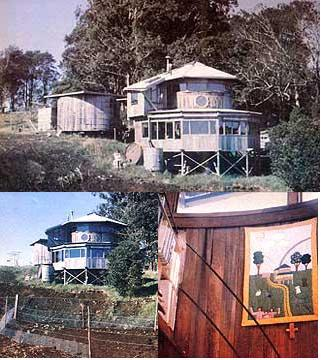

CLOCKWISE FROM THE TOP: The Lundburgs' creativity and hard work turned a mass of moldering redwood boards into a cozy, yurtlike abode . . . . The rustic interior is enhanced by a quilted wall hanging . . . . The fertile acreage boasts a family-sized vegetable plot